준비 완료 · 녹색 재생
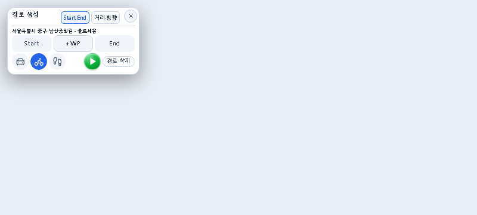

좁은 화면 667×300
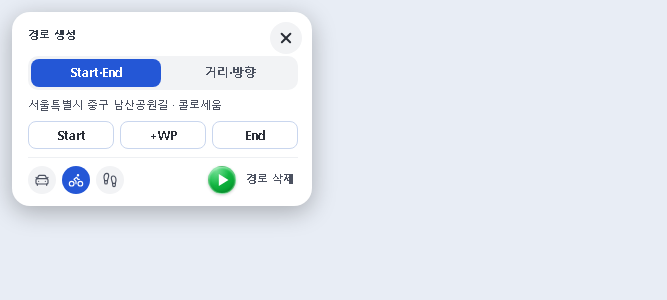
최종 검증: 회귀100 PASS/1 SKIP · 팝업/지도36 PASS · 실앱 제목/경계2 PASS · 타입 보정 후 실제 지도1 PASS · 빠른시험1360 PASS · TypeScript PASS. 커밋·배포 없음.
Chief 묶음4 승인 후 진행 · 지시65. 제품 구현·최종 감리·캡처: Codex 직접 / 조사·fixture·시험·독립 diff 감리: Cursor CLI.
고정 디자인 우선: Start·+WP·End, Start·End 탭, 녹색 원형 재생 유지. 거리와 방향으로 길을 찾는 기존 순서를 보존했습니다. 시안의 자동 시작 글자 버튼은 적용하지 않았습니다. 토큰·주소·이동수단·오류 안내도 남겼습니다.
왼쪽은 같은 실제 DOM에서 이번 CSS만 제외한 이전 스타일 재현입니다. 실제 변경 전 앱 캡처가 아닙니다. 오른쪽은 변경 후 제품 코드의 메모리 fixture 캡처이며 실제 서버 탐색 성공을 뜻하지 않습니다. 기존 캡처·묶음1~4 변경은 보존했습니다.
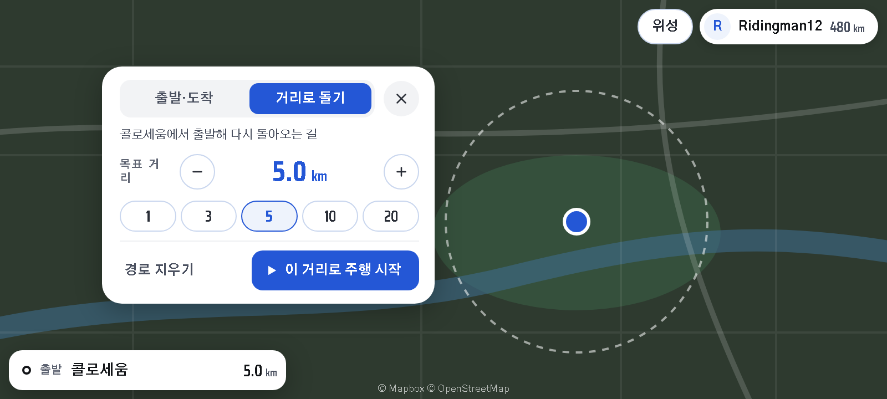
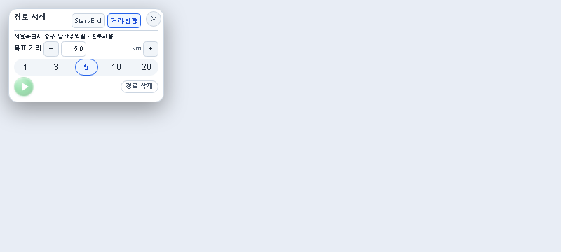
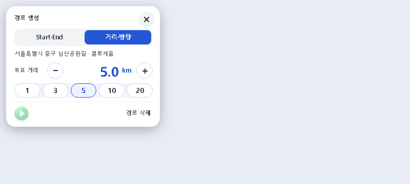
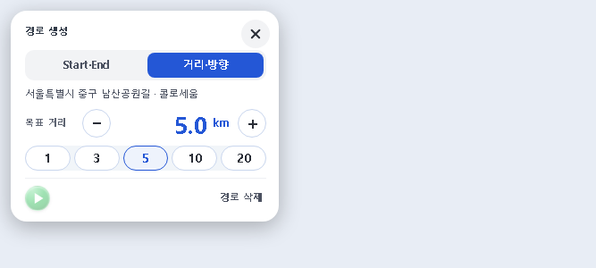
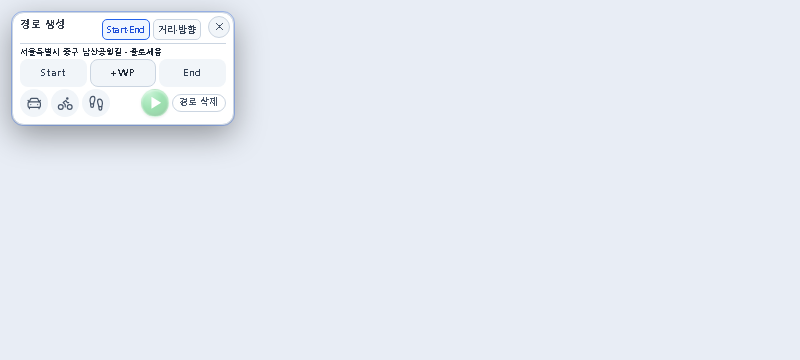
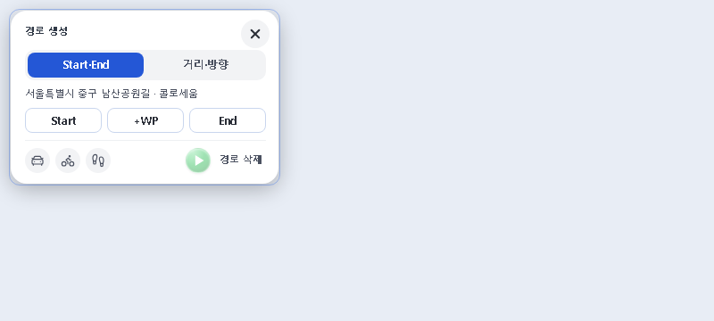


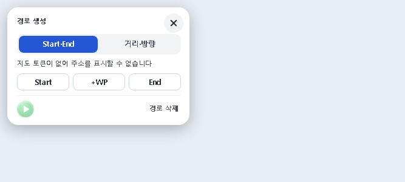
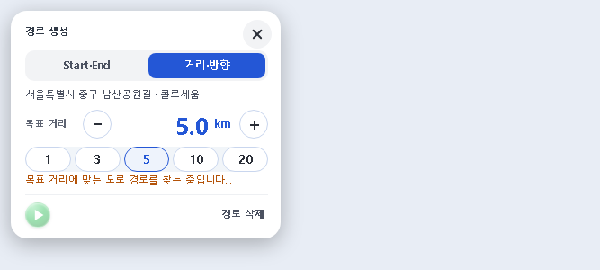
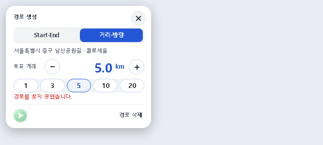
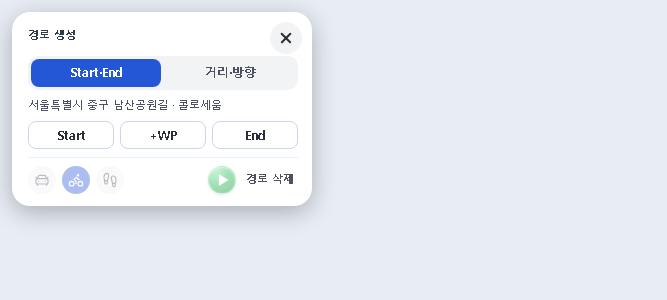
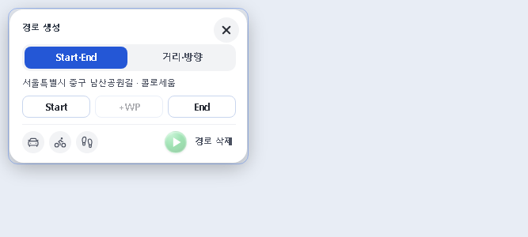
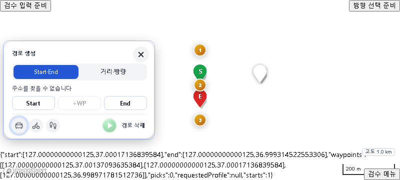
실제 MapView 런타임 하네스 · 지도 스타일/외부 API는 시험 스텁. 다섯 지점·수단·주행 준비의 콜백을 검사했습니다.
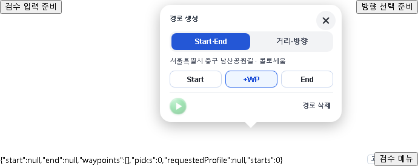
위에서8px 안쪽. 제목·닫기 포함 전체 팝업이 화면 안에 들어옵니다.
커밋·배포 없음. 열려 있던 비교 화면은 새로고침해 주세요.